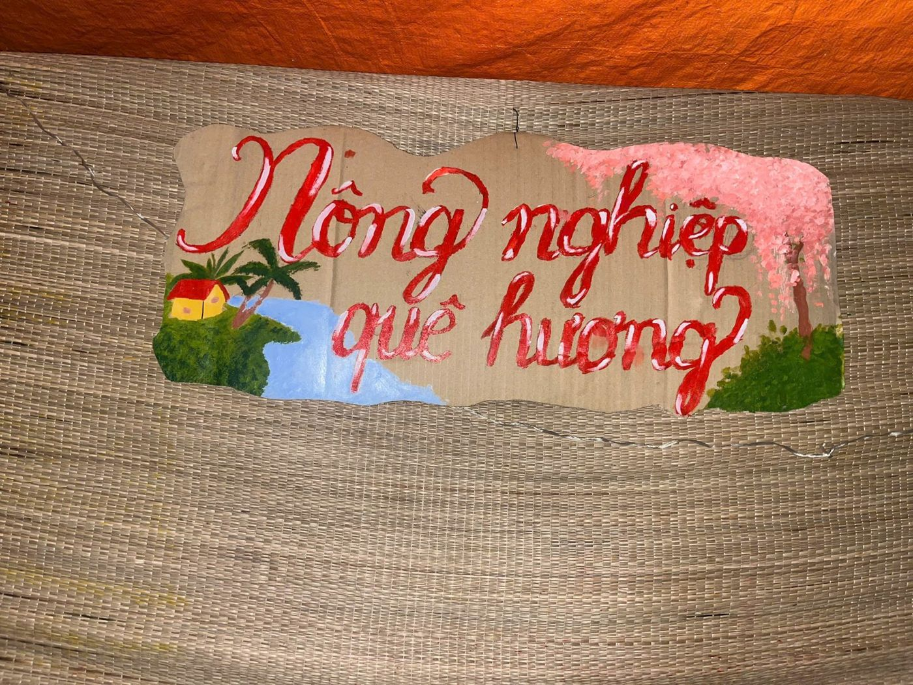
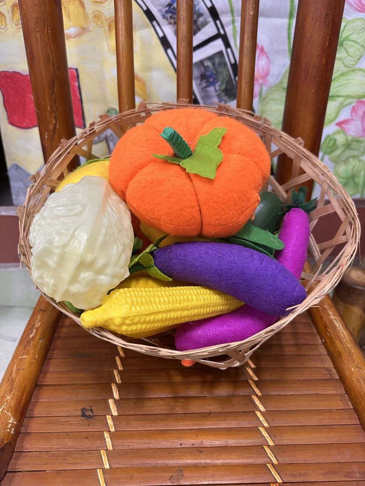

Rau củ
Rau củRau củ
Bí ngô, bắp cải, ngô, cà tím… khâu bằng vải nỉ, xếp trong rổ tre đan.
Không gian 01
Hương sắc quê hương
Nơi tái hiện hình ảnh thân thuộc của làng quê Việt Nam qua những sản vật bình dị như lạc, rau củ, hoa quả, hình ảnh chú gà, chiếc giỏ cùng những vật dụng lao động quen thuộc.

Mỗi sản vật tuy giản dị nhưng đều chứa đựng hương vị của quê hương và sự cần cù, chịu khó của người nông dân.
Rau củBí ngô, bắp cải, ngô, cà tím… khâu bằng vải nỉ, xếp trong rổ tre đan.
Những sản vật quen thuộc của đồng đất quê nhà.
Hình ảnh gần gũi của sân vườn làng quê.
Những vật dụng lao động quen thuộc của người nông dân.

Điều chúng em muốn gửi gắm
Qua không gian này, chúng em muốn thể hiện tình yêu đối với mảnh đất mình sinh ra, đồng thời bày tỏ lòng biết ơn tới những người đã làm nên những mùa vàng no ấm.
Bởi đôi khi, chính những điều bình dị nhất lại làm nên linh hồn của quê hương.